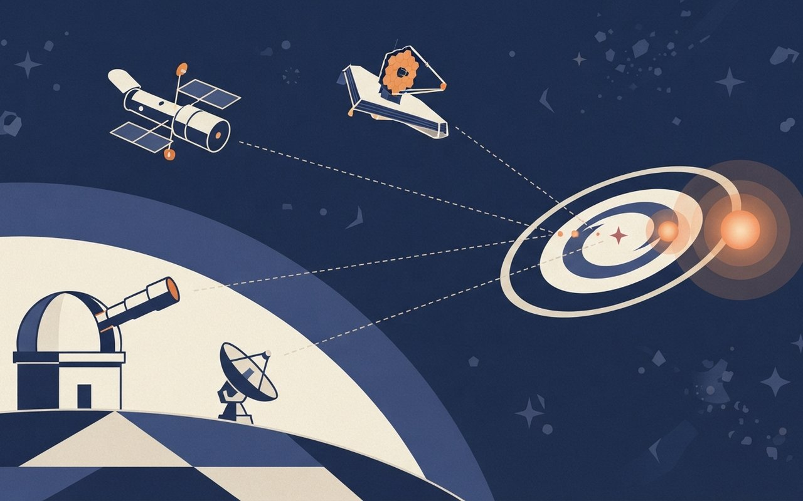
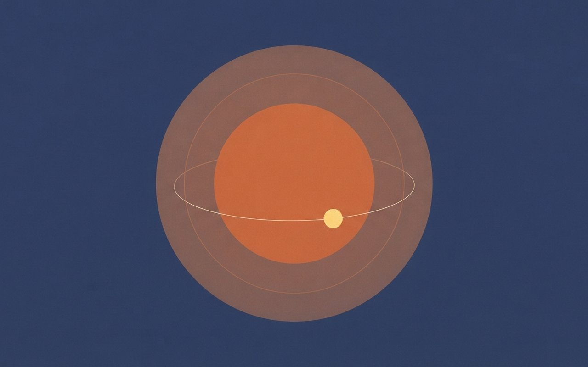
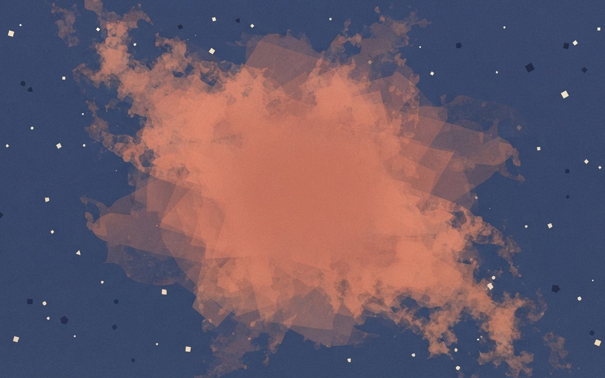
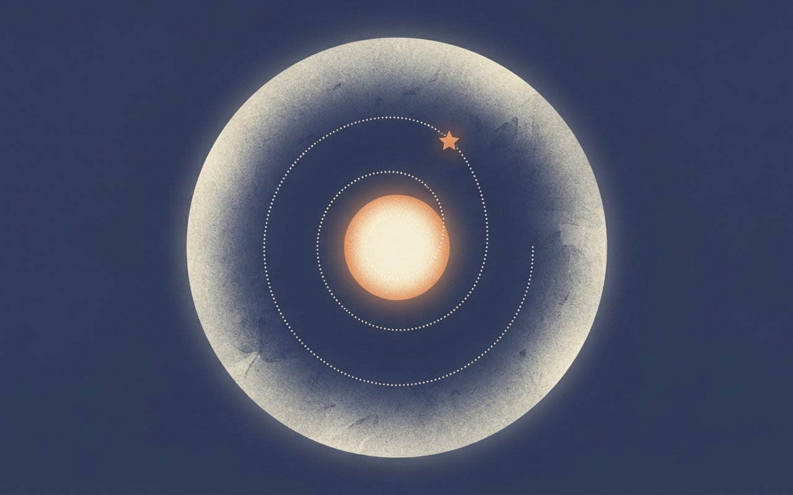

🎧 낭독 원고 보기
11월 22일 일요일, 우주·과학 브리프입니다. 오늘은 안드로메다은하에서 별 하나가 다른 별 안으로 빨려 들어간 7년의 기록입니다.
2023년 2월, 안드로메다의 한 별이 수상하게 깜박이기 시작했습니다. 적외선 탐사 위성 니오와이즈가 이상 변광을 잡았고, 2024년 9월에는 윈터 망원경이 밝아지는 빛과 먼지를 봤습니다. 2025년 7월에는 가시광은 어두워지는데 적외선은 밝아졌고, 2025년 10월 17일 ZTF가 폭발을 잡았습니다. 같은 해 12월 24일에는 제임스 웹 우주망원경이 관측했습니다. 사실 같은 연구팀은 폭발 전인 2025년 5월에 이미 이 별을 다룬 논문을 냈습니다. 2018년부터 2021년 사이에 0.5등급쯤 밝아졌고, 그 뒤 약 1,000일 동안 1등급 더 밝아졌다는 기록입니다.
무대는 우리 이웃 안드로메다은하입니다. 이 사건의 이름은 AT 2025abao, 연구진의 별명은 바오입니다. 논문은 11월 18일 네이처에 실렸고, 제1저자는 컬럼비아대의 비라즈 카람벨카르입니다. NASA는 해보다 조금 가벼운 별이 부푼 거인 안으로 파고든 첫 사례라고 소개했고, 연구팀은 이 자료로 두 별이 한 겹의 기체를 나눠 쓰는 공통 외피 과정이 얼마나 효율적인지 쟀습니다.
두 별의 몸집 차이는 큽니다. 큰 바오는 폭발 전 해의 약 7배 질량에, 반지름은 해의 350배, 밝기는 해의 1만 8천 배였습니다. 작은 바오는 해의 약 0.7배로, 이 별의 질량이 추정된 것은 이번이 처음입니다. 2025년 논문은 원래 별을 해의 7배 안팎, 표면 온도 약 3,500켈빈의 늙어 가는 별로 봤습니다. 거인의 반지름만 놓고 보면, 해 자리에 두었을 때 지구 궤도를 훌쩍 넘어 화성 궤도 언저리까지 닿는 크기입니다. 작은 별은 그 거인 안으로 나선을 그리며 파고들었습니다.
제임스 웹은 폭발이 가장 밝았던 때부터 47일 뒤에 이 별을 봤습니다. 긴급 관측 시간을 받아서였고, 비슷한 사건 가운데 가장 이른 후속 관측이었습니다. 중적외선 자료는 거인이 수백 년 동안 내뿜은 먼지를 따라갑니다. 다만 그 먼지가 남은 별을 가리고 있어, 지금 무엇이 남았는지는 직접 보이지 않습니다. 사이언스뉴스는 이 계가 안정되기까지 수년, 길게는 수십 년이 걸릴 수 있다고 전했습니다. 가시광으로는 어두워지는데 적외선으로는 밝아지는 것이 먼지의 신호입니다. 먼지는 별빛을 가리지만, 데워진 먼지 스스로 적외선으로 빛나기 때문입니다.
놀라운 것은 속도입니다. 두 별이 닿은 뒤 일곱 바퀴, 약 7년 만에 합쳐졌습니다. 지금까지 알려진 작은 별끼리의 병합은 수천 바퀴가 걸렸습니다. 사이뉴스에 따르면 밖으로 날아간 물질은 해의 0.1에서 0.2배 정도입니다. 사이언스뉴스에 따르면 거인 바깥 기체의 약 10분의 1만 빠져나갔고, 폭발 에너지로 보아 작은 별은 거인의 중심핵까지 파고든 것으로 보입니다. 기존 모형이 에너지가 퍼지는 방식을 다 담지 못할 수 있다는 뜻입니다.
이런 폭발을 붉은 신성이라고 부릅니다. 다른 연구팀은 바오를 안드로메다에서 네 번째로 확인된 붉은 신성으로 분류했습니다. 가장 밝을 때 15.1등급이었고, 붉은 빛에서 70일 동안 밝기가 유지됐습니다. 비교 대상인 외뿔소자리 V838은 2002년에 갑자기 해의 약 60만 배 밝기로 빛났고, 두 별이 부딪쳤다는 설명은 아직 가설로 남아 있습니다.
정리하면, 확인된 것은 7년에 걸친 밝기 변화와 폭발, 그리고 두 별의 몸집입니다. 병합은 그 자료를 가장 잘 설명하는 연구진의 해석이고, 열려 있는 것은 먼지 뒤에 남은 별의 정체입니다. 바오는 폭발 전 단계부터 기록된 드문 사례라, 같은 계열 폭발의 원인을 가려 낼 기준이 될 수 있습니다.
이상 우주·과학 브리프였습니다. 좋은 한 주 보내세요.
錄
망원경 릴레이
2023년 이상 변광부터 2025년 폭발까지 — 별이 별을 삼킨 7년을 여러 망원경이 이어 기록했다
NASA에 따르면 이 별은 2018년 이전까지 밝기가 일정했다. 2023년 2월 적외선 위성 NEOWISE가 이상 변광을 잡았고, 2024년 9월 WINTER가 밝아지는 빛과 먼지를 봤다. 2025년 7월 SPHEREx 자료에서는 가시광은 어두워지고 적외선은 밝아졌다. 2025년 10월 17일 ZTF가 폭발을 잡았고, 11월 Swift·Gemini North가 뒤를 이었으며, 12월 24일 제임스 웹이 관측했다.
폭발 전에 이미 징후가 보고돼 있었다. 같은 연구팀은 2025년 5월 arXiv 논문에서 이 별이 공통 외피 진화를 시작했을 가능성을 제기하며, 이 별이 2018~2021년 약 0.5등급 밝아지고, 그 뒤 약 1,000일 동안 1등급 더 밝아졌다고 보고했다. 두 별이 닿은 뒤 합쳐지기까지는 약 7년이 걸린 것으로 분석됐다. NASA는 이를 해보다 조금 가벼운 별이 부푼 초거성 안으로 파고들어 합쳐진 '첫 사례'라고 발표했고, 연구팀은 이 자료로 한 별이 부풀어 동반성을 감싸면서 두 별이 한 겹의 기체를 나눠 쓰는 '공통 외피' 진화가 얼마나 효율적인지 쟀다.
- ~2018년밝기 일정(NASA) · 18년부터 21년까지 약 0.5등급 증광(arXiv)
- 23년 2월NEOWISE 이상 변광
- 24년 9월WINTER 증광·먼지
- 25년 7월SPHEREx 가시광 감소·적외선 증가
- 25년 10월17일 ZTF 폭발 포착 · 11월 Swift·Gemini North
- 25년 12월24일 제임스 웹 관측
- 의미해보다 가벼운 별이 초거성 안으로 파고든 첫 사례 · 공통 외피 효율 측정(NASA)
- 폭발 전 논문2025-05 arXiv · 2018~2021년 약 0.5등급 상승, 이후 약 1,000일 1등급 증광
🔭 알고 보면 달라지는 것
'병합 순간'을 한 장의 사진으로 찍은 것이 아니다. 7년 동안 서로 다른 망원경이 남긴 밝기·색 기록을 이어 붙여 무슨 일이 있었는지 재구성한 결과다.
NASA — 관측 연대기 arXiv — 폭발 전 논문 2505.09691
NASA(2026-11-18, 11-19 갱신)·arXiv:2505.09691(2025-05-14, 같은 연구팀) · 7년은 '접촉 뒤 약 7궤도(약 7년)'(sci.news) 기준 · 연대기 날짜는 NASA 단일 (확인 2026-11-22)
별이 별을 삼킨 7년,
폭발 전부터 기록됐다
안드로메다의 한 별이 2023년 수상하게 깜박였어요. 2025년 10월 폭발했고, 12월 24일 제임스 웹이 봤어요. 여러 망원경이 이어 달렸어요.
18년 증광|23년 2월 변광|25년 10월 폭발|25년 12월 웹
1,000일|폭발 전 1등급 더 밝아진 기간
1,000일|폭발 전 1등급 더 밝아진 기간
Several different telescopes, some on the ground and some in orbit, all pointing toward one reddish star inside a distant spiral galaxy, the star shown brightening in stages, conceptual schematic, not a real photograph, no text

星
큰 바오 · 작은 바오
해의 7배 거인과 해의 0.7배 동반성 — 반지름 350배, 밝기 1만 8천 배인 별의 대기 속으로
NASA에 따르면 '큰 바오'는 폭발 전 해의 약 7배 질량에 반지름은 해의 350배, 밝기는 해의 1만 8,000배인 초거성이었다. '작은 바오'는 해의 약 0.7배로, 이 별의 질량이 추정된 것은 이번이 처음이다.
같은 팀의 2025년 논문은 폭발 전 별을 해의 7±2배 질량, 표면 온도 약 3,500K의 초기 점근거성가지(AGB) 별로 봤다. phys.org(NASA 보도자료)에 따르면 해보다 조금 가벼운 작은 바오가 부푼 큰 바오 안으로 나선을 그리며 파고들었다.
- 큰 바오질량 해의 약 7배 · 반지름 350배 · 밝기 1만 8,000배(NASA)
- 작은 바오질량 해의 약 0.7배 · 첫 질량 추정(NASA)
- 폭발 전 추정7±2 태양질량 · 표면 약 3,500K · 초기 AGB 별(arXiv 2025-05)
- 확인 한계반지름·밝기는 단위가 달라 그림에 넣지 않음
🔭 알고 보면 달라지는 것
반지름 350배는 해 자리에 놓으면 지구 궤도를 훌쩍 넘어 화성 궤도 언저리까지 닿는 크기다(해 반지름 약 70만 km × 350 ≈ 2억 4천만 km, 지구 궤도 반지름 약 1억 5천만 km, 화성 궤도 약 2억 3천만 km — 일반 값으로 계산).
phys.org — 두 별의 질량·반지름 arXiv — 폭발 전 별의 추정
phys.org(2026-11-18, NASA 보도자료 전재 — NASA 원문과 수치 일치)·arXiv:2505.09691(2025-05-14) · 지구·화성 궤도 비교는 해 반지름·궤도 반지름 일반 값으로 계산 (확인 2026-11-22)
지구 궤도 넘게 부푼 거인,
그 속으로 파고든 작은 별
큰 바오는 해의 약 7배 질량에 반지름이 해의 350배였어요. 작은 바오는 해의 약 0.7배로, 질량이 추정된 건 이번이 처음이에요.
큰 바오|작은 바오 / 질량(해=1):7:0.7
350배|큰 바오의 반지름(해 대비)
A huge swollen red supergiant star with a faint diffuse outer atmosphere and a much smaller yellow star orbiting just inside the edge of that atmosphere, conceptual schematic, not a real photograph, no text

塵
중적외선
폭발 정점 47일 뒤 웹이 봤다 — 거인이 수백 년 내뿜은 먼지, 남은 별은 아직 가려져 있다
phys.org(NASA 보도자료)에 따르면 제임스 웹은 폭발이 가장 밝았던 때부터 47일 뒤인 2025년 12월 24일, 긴급 '감독 재량 시간(DDT)' 프로그램으로 이 별을 관측했다. 비슷한 사건 가운데 가장 이른 후속 관측이다. 중적외선 자료는 거인이 수백 년 동안 내뿜은 먼지를 추적한다.
Science News는 그 먼지가 남은 천체를 가리고 있어 지금 무엇이 남았는지는 직접 보이지 않으며, 이 계가 안정되기까지 수년, 길게는 수십 년이 걸릴 수 있다고 전했다.
- 관측2025-12-24 · 폭발 정점 47일 뒤 · 감독 재량 시간(DDT)
- 기록비슷한 사건 가운데 가장 이른 후속 관측
- 본 것중적외선 — 거인이 수백 년 동안 내뿜은 먼지
- 남은 질문먼지 뒤 남은 천체 미확인 · 계가 안정되기까지 수년~수십 년(Science News)
🔭 알고 보면 달라지는 것
가시광으로는 어두워지는데 적외선으로는 밝아지는 것이 먼지의 신호다. 먼지는 별빛을 가리지만, 데워진 먼지 스스로 적외선으로 빛난다. 그래서 웹의 중적외선 눈이 필요했다.
phys.org — 웹 47일 뒤 관측 Science News — 남은 별은 가려져
phys.org(2026-11-18, NASA 보도자료 전재)·Science News(2026-11-18) · 가시광·적외선 해석은 일반 해설 (확인 2026-11-22)
폭발 47일 뒤 웹이 본 건
수백 년 쌓인 먼지
폭발 정점 47일 뒤의 관측으로, 비슷한 사건 중 가장 일렀어요. 먼지가 남은 별을 가려 정체는 아직 몰라요. 그림은 AI 개념도예요.
수년~수십 년|계가 안정되기까지
Side view of a thick cocoon of warm dust filling most of the frame and glowing dull red-orange in infrared, completely hiding the star inside, no visible star, no point of light, no starburst at the center, dust spreading outward unevenly, deep space background, conceptual schematic, not a real photograph, no text

合
공통 외피
보통은 수천 바퀴, 바오는 일곱 바퀴 만에 — 작은 별이 거인의 중심핵까지 파고든 것으로 보인다
sci.news에 따르면 논문 "An inspiral of a star inside a common envelope with its giant companion"은 11월 18일 Nature(659권 628~633쪽)에 실렸고, 제1저자는 컬럼비아대 Viraj Karambelkar다. 두 별은 닿은 뒤 약 7궤도(약 7년) 만에 합쳐졌다. 지금까지 알려진 작은 별끼리의 병합은 수천 궤도가 걸렸다. 밖으로 날아간 물질은 해의 0.1~0.2배로 추정되며, 연구진은 기존 모형이 에너지가 다시 퍼지는 방식을 다 담지 못할 수 있다고 봤다.
Science News에 따르면 거인 바깥 기체의 약 10분의 1만 빠져나간 것으로 추정되고, 폭발 에너지로 보아 작은 별은 거인의 중심핵까지 도달한 것으로 보인다. 외피를 벗겨 내고 쌍성으로 살아남은 것이 아니라 합쳐졌다는 해석이다.
- 논문Nature 659권 628~633쪽 · 2026-11-18 · 제1저자 Viraj Karambelkar(컬럼비아대) · 본문은 읽지 못함
- 걸린 시간접촉 뒤 약 7궤도(약 7년) · 알려진 작은 별 병합은 수천 궤도(sci.news)
- 날아간 물질해의 0.1~0.2배(sci.news 단일)
- 빠져나간 외피거인 바깥 기체의 약 10분의 1(Science News 단일)
- 결말작은 별이 중심핵까지 도달 — 병합(연구진 해석)
- 확인 한계공통 외피 효율의 수치는 원문에서 확인 못 해 싣지 않음
🔭 알고 보면 달라지는 것
sci.news는 공통 외피 단계에서 에너지가 다시 퍼지는 방식을 기존 모형이 다 담지 못할 수 있다고 전했다. 외피를 벗겨 내고 쌍성으로 살아남는지, 합쳐지는지에 따라 나중에 생길 천체가 달라진다(일반 해설).
sci.news — 7궤도·방출 질량 Science News — 외피 10분의 1
sci.news(2026-11-18)·Science News(2026-11-18) · 0.1~0.2배와 10분의 1은 각각 단일 매체 · 병합은 연구진의 해석이며 추가 관측으로 확인이 필요하다고 두 매체 모두 씀 (확인 2026-11-22)
수천 바퀴 대신
일곱 바퀴 만에 병합
알려진 작은 별끼리의 병합은 수천 궤도가 걸렸어요. 바오는 약 7궤도 만에 합쳐졌고, 바깥 기체는 약 10분의 1만 빠져나갔어요. 그림은 AI 개념도예요.
10분의 1|빠져나간 거인 바깥 기체
10분의 1|빠져나간 거인 바깥 기체
A small bright star spiraling inward along a tightening spiral path inside the faint glowing outer envelope of a huge red giant star toward its dense core, conceptual schematic, not a real photograph, no text
